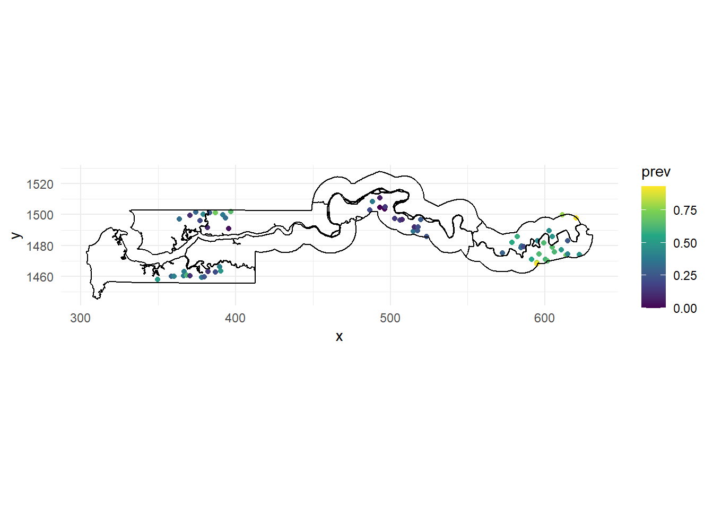
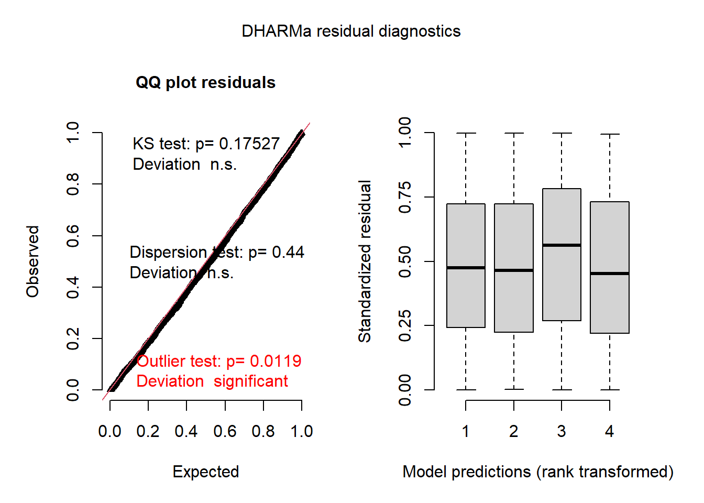
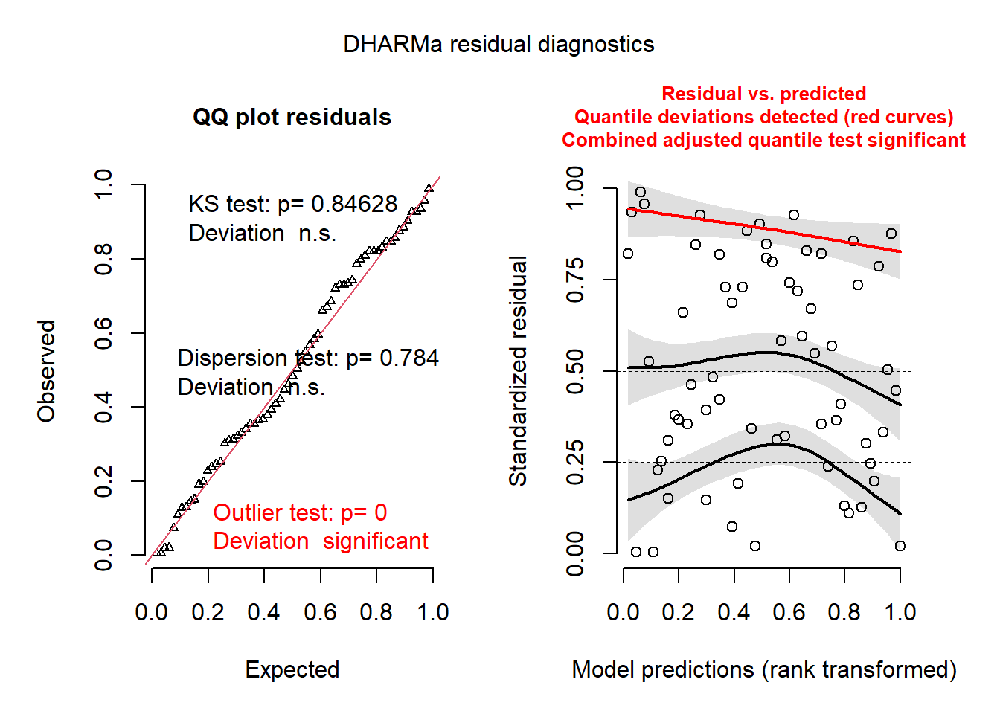
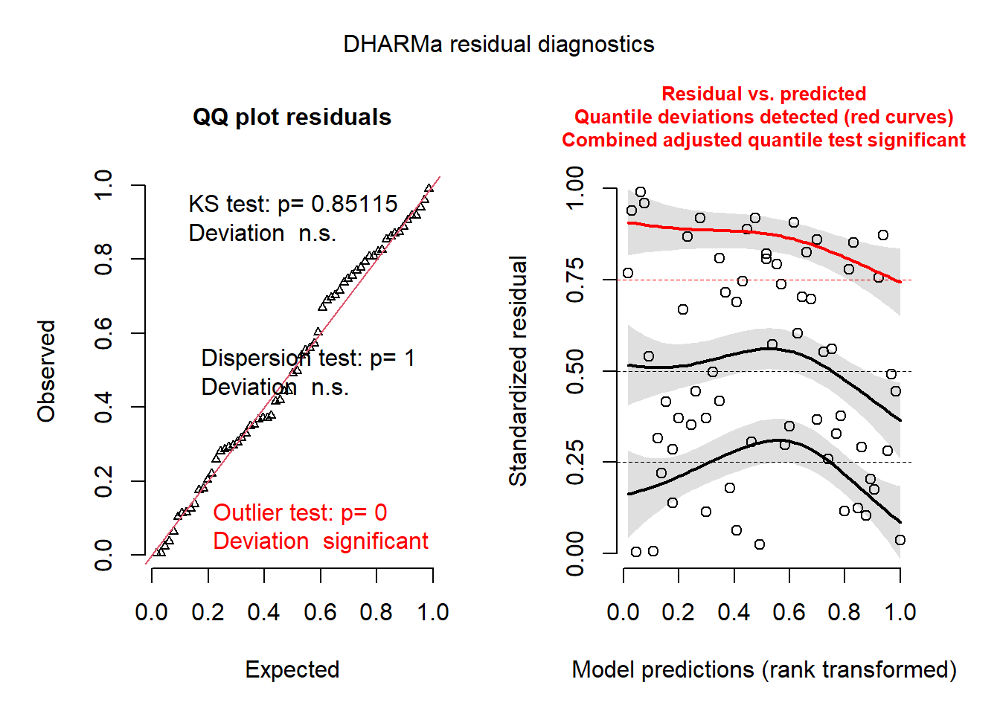
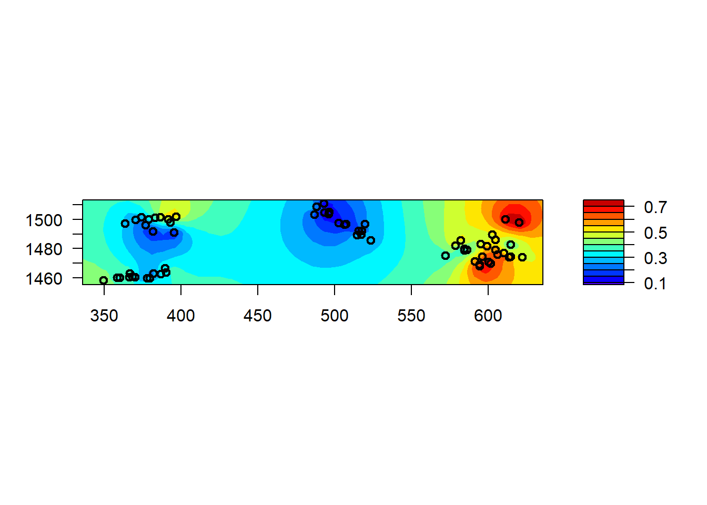
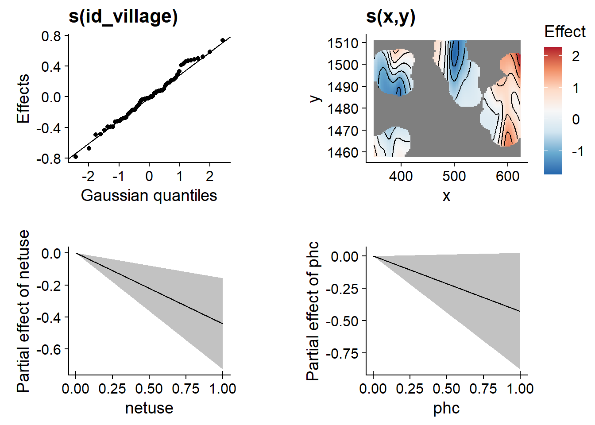
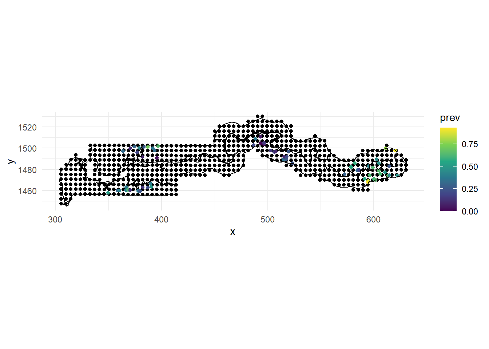
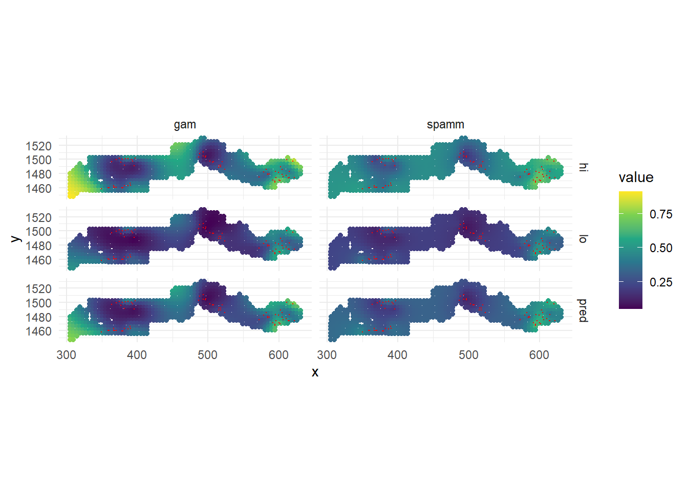
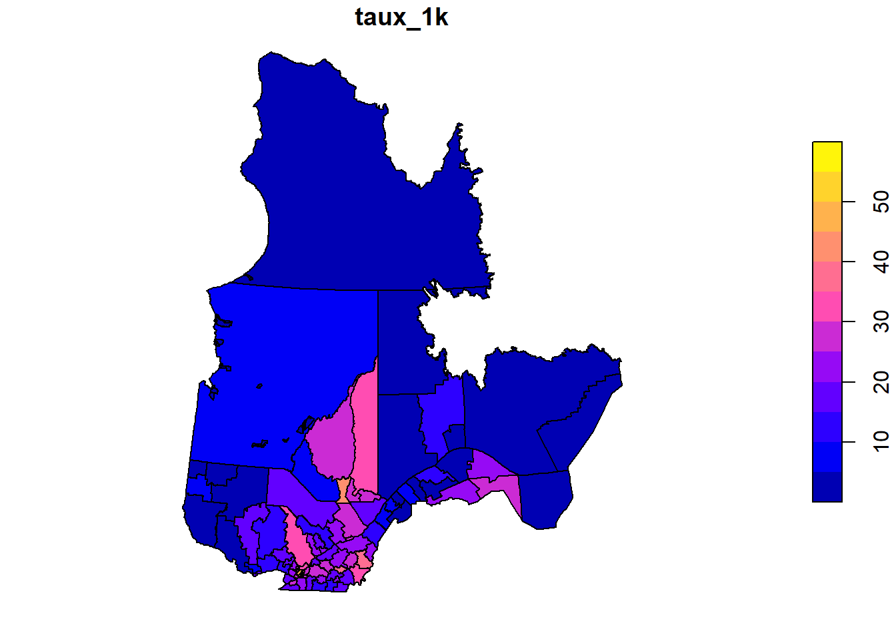

Dans les parties précédentes, nous avons vu comment tenir compte de la dépendance spatiale dans les modèles de régression linéaire avec des modèles géostatistiques (également appelés processus gaussiens) ou des modèles d’autocorrélation spatiale (CAR/SAR). Dans cette dernière partie, nous verrons comment combiner ces caractéristiques avec des modèles de régression plus complexes, en particulier les modèles linéaires généralisés à effets mixtes (GLMM).
Le jeu de données gambia inclus avec le package geoR présente les résultats d’une étude sur la prévalence du paludisme chez les enfants de 65 villages en Gambie. Nous utiliserons une version légèrement transformée des données contenues dans le fichier gambia.csv.
library(geoR)
gambia <- read.csv("data/gambia.csv")
head(gambia)## id_village x y pos age netuse treated green phc
## 1 1 349.6313 1458.055 1 1783 0 0 40.85 1
## 2 1 349.6313 1458.055 0 404 1 0 40.85 1
## 3 1 349.6313 1458.055 0 452 1 0 40.85 1
## 4 1 349.6313 1458.055 1 566 1 0 40.85 1
## 5 1 349.6313 1458.055 0 598 1 0 40.85 1
## 6 1 349.6313 1458.055 1 590 1 0 40.85 1Voici les champs de ce jeu de données:
Nous pouvons compter le nombre de cas positifs et le nombre total d’enfants testés par village pour cartographier la fraction des cas positifs (ou prévalence, prev).
# Jeu de données à l'échelle du village
gambia_agg <- group_by(gambia, id_village, x, y, green, phc) %>%
summarize(pos = sum(pos), total = n()) %>%
mutate(prev = pos / total) %>%
ungroup()## `summarise()` regrouping output by 'id_village', 'x', 'y', 'green' (override with `.groups` argument)head(gambia_agg)## # A tibble: 6 x 8
## id_village x y green phc pos total prev
## <int> <dbl> <dbl> <dbl> <int> <int> <int> <dbl>
## 1 1 350. 1458. 40.8 1 17 33 0.515
## 2 2 359. 1460. 40.8 1 19 63 0.302
## 3 3 360. 1460. 40.1 0 7 17 0.412
## 4 4 364. 1497. 40.8 0 8 24 0.333
## 5 5 366. 1460. 40.8 0 10 26 0.385
## 6 6 367. 1463. 40.8 0 7 18 0.389ggplot(gambia_agg, aes(x = x, y = y)) +
geom_point(aes(color = prev)) +
geom_path(data = gambia.borders, aes(x = x / 1000, y = y / 1000)) +
coord_fixed() +
theme_minimal() +
scale_color_viridis_c()
Nous utilisons le jeu de données gambia.borders du package geoR pour tracer les frontières des pays avec geom_path. Comme ces frontières sont en mètres, nous les divisons par 1000 pour obtenir la même échelle que nos points. Nous utilisons également coord_fixed pour assurer un rapport d’aspect de 1:1 entre les axes et utilisons la palette de couleur viridis, qui permet de visualiser plus facilement une variable continue par rapport à la palette par défaut dans ggplot2.
Sur la base de cette carte, il semble y avoir une corrélation spatiale dans la prévalence du paludisme, le groupe de villages de l’est montrant des valeurs de prévalence plus élevées (jaune-vert) et le groupe du milieu montrant des valeurs de prévalence plus faibles (violet).
Pour ce premier exemple, nous allons ignorer l’aspect spatial des données et modéliser la présence du paludisme (pos) en fonction de l’utilisation d’une moustiquaire (netuse) et de la présence d’un centre de santé publique (phc). Comme nous avons une réponse binaire, nous devons utiliser un modèle de régression logistique (un GLM). Comme nous avons des prédicteurs au niveau individuel et au niveau du village et que nous nous attendons à ce que les enfants d’un même village aient une probabilité plus similaire d’avoir le paludisme même après avoir pris en compte ces prédicteurs, nous devons ajouter un effet aléatoire du village. Le résultat est un GLMM que nous ajustons en utilisant la fonction glmer du package lme4.
library(lme4)
mod_glmm <- glmer(pos ~ netuse + phc + (1 | id_village),
data = gambia, family = binomial)
summary(mod_glmm)## Generalized linear mixed model fit by maximum likelihood (Laplace
## Approximation) [glmerMod]
## Family: binomial ( logit )
## Formula: pos ~ netuse + phc + (1 | id_village)
## Data: gambia
##
## AIC BIC logLik deviance df.resid
## 2428.0 2450.5 -1210.0 2420.0 2031
##
## Scaled residuals:
## Min 1Q Median 3Q Max
## -2.1286 -0.7120 -0.4142 0.8474 3.3434
##
## Random effects:
## Groups Name Variance Std.Dev.
## id_village (Intercept) 0.8149 0.9027
## Number of obs: 2035, groups: id_village, 65
##
## Fixed effects:
## Estimate Std. Error z value Pr(>|z|)
## (Intercept) 0.1491 0.2297 0.649 0.5164
## netuse -0.6044 0.1442 -4.190 2.79e-05 ***
## phc -0.4985 0.2604 -1.914 0.0556 .
## ---
## Signif. codes: 0 '***' 0.001 '**' 0.01 '*' 0.05 '.' 0.1 ' ' 1
##
## Correlation of Fixed Effects:
## (Intr) netuse
## netuse -0.422
## phc -0.715 -0.025D’après ces résultats, les variables netuse et phc sont toutes deux associées à une diminution de la prévalence du paludisme, bien que l’effet de phc ne soit pas significatif à un seuil \(\alpha = 0.05\). L’ordonnée à l’origine (0.149) est le logit de la probabilité de présence du paludisme pour un enfant sans moustiquaire et sans centre de santé publique, mais c’est l’ordonnée à l’origine moyenne pour tous les villages. Il y a beaucoup de variation entre les villages selon l’écart-type de l’effet aléatoire (0.90). Nous pouvons obtenir l’ordonnée à l’origine estimée pour chaque village avec la fonction coef:
head(coef(mod_glmm)$id_village)## (Intercept) netuse phc
## 1 0.93727515 -0.6043602 -0.4984835
## 2 0.09204843 -0.6043602 -0.4984835
## 3 0.22500620 -0.6043602 -0.4984835
## 4 -0.46271089 -0.6043602 -0.4984835
## 5 0.13680037 -0.6043602 -0.4984835
## 6 -0.03723346 -0.6043602 -0.4984835Par exemple, l’ordonnée à l’origine pour le village 1 est environ 0.94, équivalente à une probabilité de 72%:
plogis(0.937)## [1] 0.7184933tandis que celle pour le village 2 est équivalente à une probabilité de 52%:
plogis(0.092)## [1] 0.5229838Le package DHARMa fournit une méthode générale pour vérifier si les résidus d’un GLMM sont distribués selon le modèle spécifié et s’il existe une tendance résiduelle. Il simule des réplicats de chaque observation selon le modèle ajusté et détermine ensuite un “résidu standardisé”, qui est la position relative de la valeur observée par rapport aux valeurs simulées, par exemple 0 si l’observation est plus petite que toutes les simulations, 0.5 si elle se trouve au milieu, etc. Si le modèle représente bien les données, chaque valeur du résidu standardisé entre 0 et 1 doit avoir la même probabilité, de sorte que les résidus standardisés doivent produire une distribution uniforme entre 0 et 1.
La fonction simulateResiduals effectue le calcul des résidus standardisés, puis la fonction plot trace les graphiques de diagnostic avec les résultats de certains tests.
library(DHARMa)
res_glmm <- simulateResiduals(mod_glmm)
plot(res_glmm)
Le graphique de gauche est un graphique quantile-quantile des résidus standardisés. Les résultats de trois tests statistiques sont également présentés: un test de Kolmogorov-Smirnov (KS) qui vérifie s’il y a un écart par rapport à la distribution théorique, un test de dispersion qui vérifie s’il y a une sous-dispersion ou une surdispersion et un test de valeurs aberrantes (outlier) basé sur le nombre de résidus qui sont plus extrêmes que toutes les simulations. Ici, nous obtenons un résultat significatif pour les valeurs aberrantes, bien que le message indique que ce résultat pourrait avoir un taux d’erreur de type I plus grand que prévu dans ce cas.
À droite, nous obtenons généralement un graphique des résidus standardisés (en y) en fonction du rang des valeurs prédites, afin de vérifier l’absence de tendance résiduelle. Ici, les prédictions sont regroupées par quartile, il serait donc préférable d’agréger les prédictions et les résidus par village, ce que nous pouvons faire avec la fonction recalculateResiduals.
plot(recalculateResiduals(res_glmm, group = gambia$id_village))## DHARMa:plot used testOutliers with type = binomial for computational reasons (nObs > 500). Note that this method may not have inflated Type I error rates for integer-valued distributions. To get a more exact result, it is recommended to re-run testOutliers with type = 'bootstrap'. See ?testOutliers for details
Le graphique de droite montre les points individuels, ainsi qu’une régression quantile pour le 1er quartile, la médiane et le 3e quartile. En théorie, ces trois courbes devraient être des lignes droites horizontales (pas de tendance des résidus par rapport aux prévisions). La courbe pour le 3e quartile (en rouge) est significativement différente d’une ligne horizontale, ce qui pourrait indiquer un effet systématique manquant dans le modèle.
Le package spaMM (modèles mixtes spatiaux) est un package R relativement récent qui permet d’effectuer une estimation approximative du maximum de vraisemblance des paramètres pour les GLM avec dépendance spatiale, modélisés soit comme un processus gaussien, soit avec un CAR (nous verrons ce dernier dans la dernière section). Le package implémente différents algorithmes, mais il existe une fonction unique fitme qui choisit l’algorithme approprié pour chaque type de modèle. Par exemple, voici le même modèle (non spatial) que nous avons vu ci-dessus, ajusté avec spaMM.
library(spaMM)
mod_spamm_glmm <- fitme(pos ~ netuse + phc + (1 | id_village),
data = gambia, family = binomial)
summary(mod_spamm_glmm)## formula: pos ~ netuse + phc + (1 | id_village)
## Estimation of lambda by Laplace ML approximation (p_v).
## Estimation of fixed effects by Laplace ML approximation (p_v).
## family: binomial( link = logit )
## ------------ Fixed effects (beta) ------------
## Estimate Cond. SE t-value
## (Intercept) 0.1491 0.2287 0.6519
## netuse -0.6045 0.1420 -4.2567
## phc -0.4986 0.2593 -1.9231
## --------------- Random effects ---------------
## Family: gaussian( link = identity )
## --- Variance parameters ('lambda'):
## lambda = var(u) for u ~ Gaussian;
## id_village : 0.8151
## --- Coefficients for log(lambda):
## Group Term Estimate Cond.SE
## id_village (Intercept) -0.2045 0.2008
## # of obs: 2035; # of groups: id_village, 65
## ------------- Likelihood values -------------
## logLik
## p_v(h) (marginal L): -1210.016Notez que les estimés des effets fixes ainsi que la variance des effets aléatoires sont presque identiques à ceeux obtenues par glmer ci-dessus.
Nous pouvons maintenant utiliser spaMM pour ajuster le même modèle avec l’ajout de corrélations spatiales entre les villages. Dans la formule du modèle, ceci est représenté comme un effet aléatoire Matern(1 | x + y), ce qui signifie que les ordonnées à l’origine sont spatialement corrélées entre les villages suivant une fonction de corrélation de Matérn des coordonnées (x, y). La fonction de Matérn est une fonction flexible de corrélation spatiale qui comprend un paramètre de forme \(\nu\) (nu), de sorte que lorsque \(\nu = 0,5\), elle est équivalente à la corrélation exponentielle, mais quand \(\nu\) prend de grandes valeurs, elle se rapproche d’une corrélation gaussienne. Nous pourrions laisser la fonction estimer \(\nu\), mais ici nous le fixons à 0.5 avec l’argument fixed de fitme.
mod_spamm <- fitme(pos ~ netuse + phc + Matern(1 | x + y) + (1 | id_village),
data = gambia, family = binomial, fixed = list(nu = 0.5))## Increase spaMM.options(separation_max=<.>) to at least 21 if you want to check separation (see 'help(separation)').summary(mod_spamm)## formula: pos ~ netuse + phc + Matern(1 | x + y) + (1 | id_village)
## Estimation of corrPars and lambda by Laplace ML approximation (p_v).
## Estimation of fixed effects by Laplace ML approximation (p_v).
## Estimation of lambda by 'outer' ML, maximizing p_v.
## family: binomial( link = logit )
## ------------ Fixed effects (beta) ------------
## Estimate Cond. SE t-value
## (Intercept) 0.06861 0.3352 0.2047
## netuse -0.51719 0.1407 -3.6757
## phc -0.44416 0.2052 -2.1648
## --------------- Random effects ---------------
## Family: gaussian( link = identity )
## --- Correlation parameters:
## 1.nu 1.rho
## 0.50000000 0.05128691
## --- Variance parameters ('lambda'):
## lambda = var(u) for u ~ Gaussian;
## x + y : 0.6421
## id_village : 0.1978
## # of obs: 2035; # of groups: x + y, 65; id_village, 65
## ------------- Likelihood values -------------
## logLik
## p_v(h) (marginal L): -1197.968Commençons par vérifier les effets aléatoires du modèle. La fonction de corrélation spatiale a un paramètre rho égal à 0.0513. Ce paramètre dans spaMM est l’inverse de la portée, donc ici la portée de la corrélation exponentielle est de 1/0.0513 ou environ 19.5 km. Il y a maintenant deux pramètres de variance, celui identifié comme x + y est la variance à longue distance (i.e. le palier) pour le modèle de corrélation exponentielle alors que celui identifié comme id_village montre la portion non corrélée de la variation entre les villages.
Si nous avions ici laissé les effets aléatoires (1 | id_village) dans la formule pour représenter la partie non spatiale de la variation entre les villages, nous pourrions également représenter ceci avec un effet de pépite dans le modèle géostatistique. Dans les deux cas, cela représenterait l’idée que même deux villages très proches l’un de l’autre auraient des prévalences de base différentes dans le modèle.
Par défaut, la fonction Matern n’a pas d’effet de pépite, mais nous pouvons en ajouter un en spécifiant une pépite non nulle dans la liste initiale des paramètres init.
mod_spamm2 <- fitme(pos ~ netuse + phc + Matern(1 | x + y),
data = gambia, family = binomial, fixed = list(nu = 0.5),
init = list(Nugget = 0.1))## Increase spaMM.options(separation_max=<.>) to at least 21 if you want to check separation (see 'help(separation)').summary(mod_spamm2)## formula: pos ~ netuse + phc + Matern(1 | x + y)
## Estimation of corrPars and lambda by Laplace ML approximation (p_v).
## Estimation of fixed effects by Laplace ML approximation (p_v).
## Estimation of lambda by 'outer' ML, maximizing p_v.
## family: binomial( link = logit )
## ------------ Fixed effects (beta) ------------
## Estimate Cond. SE t-value
## (Intercept) 0.06861 0.3352 0.2047
## netuse -0.51719 0.1407 -3.6757
## phc -0.44416 0.2052 -2.1648
## --------------- Random effects ---------------
## Family: gaussian( link = identity )
## --- Correlation parameters:
## 1.nu 1.Nugget 1.rho
## 0.50000000 0.23551026 0.05128692
## --- Variance parameters ('lambda'):
## lambda = var(u) for u ~ Gaussian;
## x + y : 0.8399
## # of obs: 2035; # of groups: x + y, 65
## ------------- Likelihood values -------------
## logLik
## p_v(h) (marginal L): -1197.968Comme vous pouvez le voir, toutes les estimations sont les mêmes, sauf que la variance de la portion spatiale (palier) est maintenant de 0.84 et que la pépite est égale à une fraction 0.235 de ce palier, soit une variance de 0.197, ce qui est identique à l’effet aléatoire id_village dans la version ci-dessus. Les deux formulations sont donc équivalentes.
Maintenant, rappelons les coefficients que nous avions obtenus pour le GLMM non spatial :
summary(mod_glmm)$coefficients## Estimate Std. Error z value Pr(>|z|)
## (Intercept) 0.1490596 0.2296971 0.6489399 5.163772e-01
## netuse -0.6043602 0.1442448 -4.1898242 2.791706e-05
## phc -0.4984835 0.2604083 -1.9142381 5.558973e-02Dans la version spatiale, les deux effets fixes se sont légèrement rapprochés de zéro, mais l’erreur-type de l’effet de phc a diminué. Il est intéressant de noter que l’inclusion de la dépendance spatiale nous a permis d’estimer plus précisément l’effet de la présence d’un centre de santé publique dans le village. Ce ne serait pas toujours le cas: pour un prédicteur qui est également fortement corrélé dans l’espace, la corrélation spatiale dans la réponse rend plus difficile l’estimation de l’effet de ce prédicteur, puisqu’il est confondu avec l’effet spatial. Cependant, pour un prédicteur qui n’est pas corrélé dans l’espace, l’inclusion de l’effet spatial réduit la variance résiduelle (non spatiale) et peut donc augmenter la précision de l’effet du prédicteur.
Le package spaMM est également compatible avec DHARMa pour les diagnostics résiduels. (Vous pouvez ignorer l’avertissement selon lequel il ne fait pas partie de la classe des modèles pris en charge, cela est dû à l’utilisation de la fonction fitme plutôt que d’une fonction d’algorithme spécifique dans spaMM).
res_spamm <- simulateResiduals(mod_spamm2)## Warning in checkModel(fittedModel): DHARMa: fittedModel not in class of
## supported models. Absolutely no guarantee that this will work!plot(res_spamm)## DHARMa:plot used testOutliers with type = binomial for computational reasons (nObs > 500). Note that this method may not have inflated Type I error rates for integer-valued distributions. To get a more exact result, it is recommended to re-run testOutliers with type = 'bootstrap'. See ?testOutliers for detailsplot(recalculateResiduals(res_spamm, group = gambia$id_village))## DHARMa:plot used testOutliers with type = binomial for computational reasons (nObs > 500). Note that this method may not have inflated Type I error rates for integer-valued distributions. To get a more exact result, it is recommended to re-run testOutliers with type = 'bootstrap'. See ?testOutliers for details
Enfin, bien que nous allons montrer comment calculer et visualiser des prédictions spatiales ci-dessous, nous pouvons produire une carte rapide des effets spatiaux estimés dans un modèle spaMM avec la fonction filled.mapMM.
filled.mapMM(mod_spamm2)
Si vous connaissez bien les modèles additifs généralisés (GAM), vous avez peut-être pensé à représenter la variation spatiale de la prévalence du paludisme (comme le montre la carte ci-dessus) par une spline de lissage en 2D (en fonction de \(x\) et \(y\)) dans un GAM.
Le code ci-dessous correspond à l’équivalent GAM de notre GLMM avec processus gaussien ci-dessus, ajusté avec la fonction gam du package mgcv. L’effet spatial est représenté par la spline 2D s(x, y) alors que l’effet aléatoire non spatial de village est représenté par s(id_village, bs = "re"), qui est équivalent à (1 | id_village) dans les modèles précédents. Notez que pour la fonction gam, les variables catégorielles doivent être explicitement converties en facteurs.
library(mgcv)
gambia$id_village <- as.factor(gambia$id_village)
mod_gam <- gam(pos ~ netuse + phc + s(id_village, bs = "re") + s(x, y),
data = gambia, family = binomial)Pour visualiser la spline en 2D, nous utiliserons le package gratia.
library(gratia)
draw(mod_gam)
Notez que le graphique de la spline s(x, y) (en haut à droite) ne s’étend pas trop loin des emplacements des données (les autres zones sont vides). Dans ce graphique, on peut également voir que les effets aléatoires des villages suivent la distribution gaussienne attendue (en haut à gauche).
Ensuite, nous utiliserons à la fois le GLMM spatial de la section précédente et ce GAMM pour prédire la prévalence moyenne sur une grille spatiale de points contenue dans le fichier gambia_pred.csv. Le graphique ci-dessous ajoute ces points de prédiction (en noir) sur la carte précédente des points de données.
gambia_pred <- read.csv("data/gambia_pred.csv")
ggplot(gambia_agg, aes(x = x, y = y)) +
geom_point(data = gambia_pred) +
geom_point(aes(color = prev)) +
geom_path(data = gambia.borders, aes(x = x / 1000, y = y / 1000)) +
coord_fixed() +
theme_minimal() +
scale_color_viridis_c()
Pour faire des prédictions à partir du modèle GAMM à ces endroits, le code ci-dessous effectue les étapes suivantes:
Tous les prédicteurs du modèle doivent se trouver dans le tableau de données de prédiction, nous ajoutons donc des valeurs constantes de netuse et phc (toutes deux égales à 1) pour tous les points. Ainsi, nous ferons des prédictions sur la prévalence du paludisme dans le cas où un moustiquaire est utilisée et où un centre de santé publique est présent. Nous ajoutons également un id_village constant, bien qu’il ne soit pas utilisé dans les prédictions (voir ci-dessous).
Nous appelons la fonction predict à la sortie de gam pour produire des prédictions aux nouveaux points de données (argument newdata), en incluant les erreurs-types (se.fit = TRUE) et en excluant les effets aléatoires du village, donc la prédiction est faite pour un “village moyen”. L’objet résultant gam_pred aura des colonnes fit (prédiction moyenne) et se.fit (erreur-type). Ces prédictions et erreurs-types sont sur l’échelle du lien (logit).
Nous rattachons le jeu de données de prédiction original à gam_pred avec cbind.
Nous ajoutons des colonnes pour la prédiction moyenne et les limites de l’intervalle de confiance à 50% (moyenne \(\pm\) 0.674 erreur-type), converties de l’échelle logit à l’échelle de probabilité avec plogis. Nous choisissons un intervalle de 50% car un intervalle de 95% peut être trop large ici pour contraster les différentes prédictions sur la carte à la fin de cette section.
gambia_pred <- mutate(gambia_pred, netuse = 1, phc = 1, id_village = 1)
gam_pred <- predict(mod_gam, newdata = gambia_pred, se.fit = TRUE,
exclude = "s(id_village)")
gam_pred <- cbind(gambia_pred, as.data.frame(gam_pred))
gam_pred <- mutate(gam_pred, pred = plogis(fit),
lo = plogis(fit - 0.674 * se.fit), # 50% CI
hi = plogis(fit + 0.674 * se.fit))Note : La raison pour laquelle nous ne faisons pas de prédictions directement sur l’échelle de probabilité (réponse) est que la formule normale des intervalles de confiance s’applique plus précisément sur l’échelle logit. L’ajout d’un certain nombre d’erreurs-types autour de la moyenne sur l’échelle de probabilité conduirait à des intervalles moins précis et peut-être même à des intervalles de confiance en dehors de la plage de valeurs possible (0, 1) pour une probabilité.
Nous appliquons la même stratégie pour faire des prédictions à partir du GLMM spatial avec spaMM. Il y a quelques différences dans la méthode predict par rapport au cas du GAMM.
L’argument binding = "fit" signifie que les prédictions moyennes (colonne fit) seront attachées à l’ensemble de données de prédiction et retournées sous forme de tableau de données spamm_pred.
L’argument variances = list(linPred = TRUE) indique à predict de calculer la variance du prédicteur linéaire (donc le carré de l’erreur-type). Cependant, il apparaît comme un attribut predVar dans le tableau de données de sortie plutôt que dans une colonne se.fit, donc nous le déplaçons vers une colonne sur la ligne suivante.
spamm_pred <- predict(mod_spamm, newdata = gambia_pred, type = "link",
binding = "fit", variances = list(linPred = TRUE))
spamm_pred$se.fit <- sqrt(attr(spamm_pred, "predVar"))
spamm_pred <- mutate(spamm_pred, pred = plogis(fit),
lo = plogis(fit - 0.674 * se.fit),
hi = plogis(fit + 0.674 * se.fit))Enfin, nous combinons les deux ensembles de prédictions sous la forme de différentes rangées d’un tableau de données pred_all avec bind_rows. Le nom du tableau de données d’où provient chaque prédiction (gam ou spamm) apparaîtra dans la colonne “model” (argument .id). Pour simplifier la production du prochain graphique, nous utilisons ensuite pivot_longer dans le package tidyr pour changer les trois colonnes “pred”, “lo” et “hi” en deux colonnes, “stat” et “value” (pred_tall a donc trois rangées pour chaque rangée dans pred_all).
pred_all <- bind_rows(gam = gam_pred, spamm = spamm_pred, .id = "model")
library(tidyr)
pred_tall <- pivot_longer(pred_all, c(pred, lo, hi), names_to = "stat",
values_to = "value")Une fois ces étapes franchies, nous pouvons enfin examiner les cartes de prédiction (moyenne, limites inférieure et supérieure de l’intervalle de confiance à 50 %) à l’aide d’un graphique ggplot. Les points de données originaux sont indiqués en rouge.
ggplot(pred_tall, aes(x = x, y = y)) +
geom_point(aes(color = value)) +
geom_point(data = gambia_agg, color = "red", size = 0) +
coord_fixed() +
facet_grid(stat~model) +
scale_color_viridis_c() +
theme_minimal()
Bien que les deux modèles s’accordent à dire que la prévalence est plus élevée près du groupe de villages de l’est, le GAMM estime également une prévalence plus élevée en quelques points (bord ouest et autour du centre) où il n’y a pas de données. Il s’agit d’un artefact de la forme de la spline autour des points de données, puisqu’une spline est censée correspondre à une tendance globale, bien que non linéaire. En revanche, le modèle géostatistique représente l’effet spatial sous forme de corrélations locales et revient à la prévalence moyenne globale lorsqu’il est éloigné de tout point de données, ce qui est une supposition plus sûre. C’est l’une des raisons pour lesquelles il est préférable de choisir un modèle géostatistique / processus gaussien dans ce cas.
Les modèles bayésiens fournissent un cadre flexible pour exprimer des modèles avec une structure de dépendance complexe entre les données, y compris la dépendance spatiale. Cependant, l’ajustement d’un modèle de processus gaussien avec une approche entièrement bayésienne peut être lent, en raison de la nécessité de calculer une matrice de covariance spatiale entre toutes les paires de points à chaque itération.
La méthode INLA (pour integrated nested Laplace approximation) effectue un calcul approximatif de la distribution postérieure bayésienne, ce qui la rend adaptée aux problèmes de régression spatiale. Nous ne l’abordons pas dans ce cours, mais je recommande le manuel de Paula Moraga (dans la section des références ci-dessous) qui fournit des exemples concrets d’utilisation de la méthode INLA pour divers modèles de données géostatistiques et aréales, dans le contexte de l’épidémiologie, y compris des modèles avec une dépendance à la fois spatiale et temporelle. Le livre présente les mêmes données sur le paludisme en Gambie comme exemple d’un ensemble de données géostatistiques, ce qui a inspiré son utilisation dans ce cours.
Nous revenons au dernier exemple de la partie précédente, où nous avions modélisé le taux de cas de COVID-19 (cas / 1000) pour les divisions administratives du réseau de la santé (RLS) au Québec en fonction de leur densité de population. Le taux est donné par la colonne “taux_1k” dans le shapefile rls_covid.
library(sf)
rls_covid <- read_sf("data/rls_covid.shp")
rls_covid <- rls_covid[!is.na(rls_covid$dens_pop), ]
plot(rls_covid["taux_1k"])
Auparavant, nous avions modélisé le logarithme de ce taux comme une fonction linéaire du logarithme de la densité de population, la variance résiduelle étant corrélée entre les unités voisines via une structure CAR (autorégression conditionnelle), comme le montre le code ci-dessous.
library(spdep)
library(spatialreg)
rls_nb <- poly2nb(rls_covid)
rls_w <- nb2listw(rls_nb, style = "B")
car_lm <- spautolm(log(taux_1k) ~ log(dens_pop), data = rls_covid,
listw = rls_w, family = "CAR")
summary(car_lm)##
## Call: spautolm(formula = log(taux_1k) ~ log(dens_pop), data = rls_covid,
## listw = rls_w, family = "CAR")
##
## Residuals:
## Min 1Q Median 3Q Max
## -1.201858 -0.254084 -0.053348 0.281482 1.427053
##
## Coefficients:
## Estimate Std. Error z value Pr(>|z|)
## (Intercept) 1.702068 0.168463 10.1035 < 2.2e-16
## log(dens_pop) 0.206623 0.032848 6.2903 3.169e-10
##
## Lambda: 0.15762 LR test value: 23.991 p-value: 9.6771e-07
## Numerical Hessian standard error of lambda: 0.0050486
##
## Log likelihood: -80.68953
## ML residual variance (sigma squared): 0.2814, (sigma: 0.53048)
## Number of observations: 95
## Number of parameters estimated: 4
## AIC: 169.38Rappel: La fonction poly2nb du package spdep crée une liste de voisins basée sur les polygones limitrophes dans un shapefile, puis nb2listw la convertit en une liste de poids, ici des poids binaires (style = "B") de sorte que chaque région limitrophe reçoive le même poids de 1 dans le modèle autorégressif.
Au lieu d’utiliser les taux, il serait possible de modéliser directement les cas avec une régression de Poisson, qui est appropriée pour les données de comptage. Pour tenir compte du fait que si le risque par personne était égal, les cas seraient proportionnels à la population, nous pouvons ajouter la population de l’unité pop comme offset dans la régression de Poisson. Par conséquent, le modèle ressemblerait à : cas ~ log(dens_pop) + offset(log(pop)). Notez que puisque la régression de Poisson utilise un lien logarithmique, ce modèle avec log(pop) comme offset suppose que log(cas / pop) (donc le taux logarithmique) est proportionnel à log(dens_pop), tout comme le modèle linéaire ci-dessus, mais il a l’avantage de modéliser la variabilité des données brutes (le nombre de cas) directement avec une distribution de Poisson.
Nous n’avons pas la population dans ces données, mais nous pouvons l’estimer à partir des cas et du taux (cas / 1000) comme suit:
rls_covid$pop <- rls_covid$cas / rls_covid$taux_1k * 1000Pour définir un modèle CAR dans spaMM, nous avons besoin d’une matrice de poids plutôt que d’une liste de poids comme dans le package spatialreg. Heureusement, le package spdep comprend également une fonction nb2mat pour convertir la liste des voisins en une matrice de poids, là encore en utilisant des poids binaires. Pour éviter un avertissement dans R, nous spécifions que les noms des lignes et des colonnes de cette matrice doivent être égaux aux identifiants associés à chaque unité (RLS_code). Ensuite, nous ajoutons un terme adjacency(1 | RLS_code) au modèle pour spécifier que la variation résiduelle entre les différents groupes définis par RLS_code est spatialement corrélée avec une structure CAR (ici, chaque groupe n’a qu’une observation puisque nous avons un point de données par unité RLS).
library(spaMM)
rls_mat <- nb2mat(rls_nb, style = "B")
rownames(rls_mat) <- rls_covid$RLS_code
colnames(rls_mat) <- rls_covid$RLS_code
rls_spamm <- fitme(cas ~ log(dens_pop) + offset(log(pop)) + adjacency(1 | RLS_code),
data = rls_covid, adjMatrix = rls_mat, family = poisson)## Iterative algorithm converges slowly. See help('convergence') for suggestions.summary(rls_spamm)## formula: cas ~ log(dens_pop) + offset(log(pop)) + adjacency(1 | RLS_code)
## Estimation of corrPars and lambda by Laplace ML approximation (p_v).
## Estimation of fixed effects by Laplace ML approximation (p_v).
## Estimation of lambda by 'outer' ML, maximizing p_v.
## family: poisson( link = log )
## ------------ Fixed effects (beta) ------------
## Estimate Cond. SE t-value
## (Intercept) -5.1618 0.16855 -30.625
## log(dens_pop) 0.1999 0.03267 6.119
## --------------- Random effects ---------------
## Family: gaussian( link = identity )
## --- Correlation parameters:
## 1.rho
## 0.1576605
## --- Variance parameters ('lambda'):
## lambda = var(u) for u ~ Gaussian;
## RLS_code : 0.266
## # of obs: 95; # of groups: RLS_code, 95
## ------------- Likelihood values -------------
## logLik
## p_v(h) (marginal L): -709.3234Notez que le coefficient de corrélation spatiale rho (0.158) est similaire à la quantité équivalente dans le modèle spautolm ci-dessus, où il était appelé Lambda. L’effet de log(dens_pop) est également d’environ 0.2 dans les deux modèles.
Moraga, Paula (2019) Geospatial Health Data: Modeling and Visualization with R-INLA and Shiny. Chapman & Hall/CRC Biostatistics Series. Disponible en ligne: https://www.paulamoraga.com/book-geospatial/.